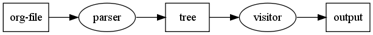

OrgParse
Table of Contents
1 これは何か？
Org-Mode で書かれた文書を他のフォーマットに変換するためのライブラリである。
1.1 何故作ったか。
直接の動機は、Redmine の文書やWikiに、Org-Modeで書いた文書を入れたかったから。 長文になると、textileで書くのは骨が折れる。Org-Mode のアウトライン操作は快適である。
この用途にはOrg-ruby が使えそうだけど、日本語の textile 文書との相性が悪かった。 Org-rubyに手を入れるか自分用を作るか迷ったのだが、Racc の勉強を兼ねて一から作ることにした。
が、構文エラーを出さない方針にしてみると、Racc 等の構文解析ライブラリは使いにくかった。 プログラミング言語じゃないから、あまりガチガチにすると使いにくいし、悩ましい所である。
2 構成
2.1 概要
org-file を、スキャナー、パーサーを通して、構文木を作成する。 出来上がった構文木から、HTMLや、textile 等のフォーマットの文書を構築する。

RDtool の構成と同じ様な形式である。 visitor の部分を置き換えることで、様々なフォーマットへ変換出来るようになる（予定）。
3 使い方
3.1 org-parse コマンド
Usage: org-parse [options] <file> -h, --help Show this message -f, --format FORMAT Translate the ORG file to the specified format.(not yet) -t, --template TEMPLATE Erb template for build the output.
3.2 org-parse ライブラリ
以下の様な感じ。
data = IO.read(ARGV[0]) # ソース文字列と、タイトルに使われるファイルのベース名を与える parser = OrgParse::StructParser.new(data, File.basename(ARGV[0], '.*')) # 構文解析を実行して、構文木を取得する root = parser.parse # ビジターに構文木を渡す。 visitor = OrgParse::HtmlVisitor.new(root, options[:template]) # 結果を得る puts visitor.build
4 MEMO
以下は、これからの修正のための覚書
4.1 オプション類の扱い
4.1.1 プログラム内でのオプションの記憶場所
オプションや、セクション番号等の情報は、各Nodeに持たせる。 つまり、ビジターで、コンテキストやオプション類の判定を行わないで済む様にする。
- セクション番号を、Section Node に持たせる
- Verse、Example 等は、各 BlockNode 配下のnode 自体が知っている
4.1.2 オプションの指定方法
コマンドラインで指定。 コンフィグファイルを作る？(~/.org-parse-rc) 文書内での指定を最優先する方が正しいか？ ../examples/dot.org-parse-rc
4.1.3 オプションの優先順位
- デフォルト設定
- .opt-parse
- コマンドラインオプション
- ソースファイル内の指定
Date: 2010-03-24 10:38:50 JST
HTML generated by org-mode 6.34trans in emacs 23